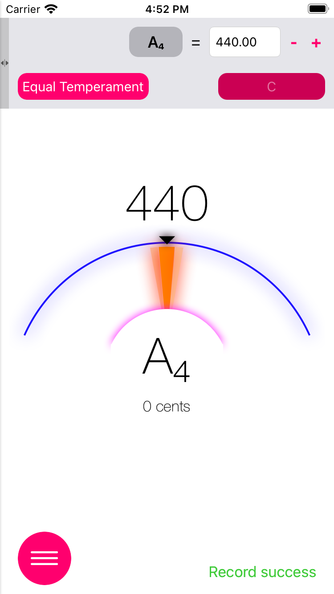
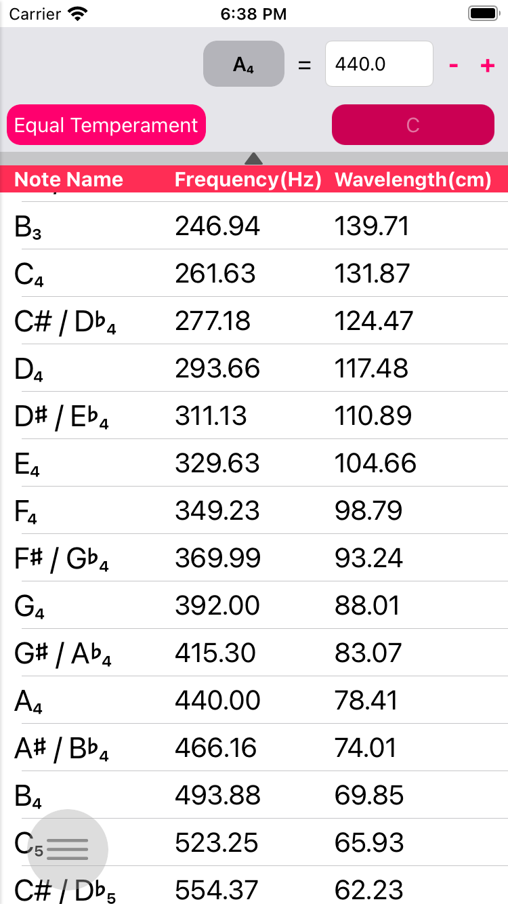
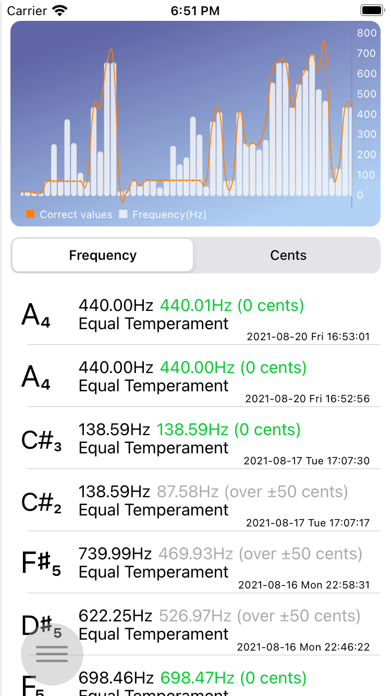
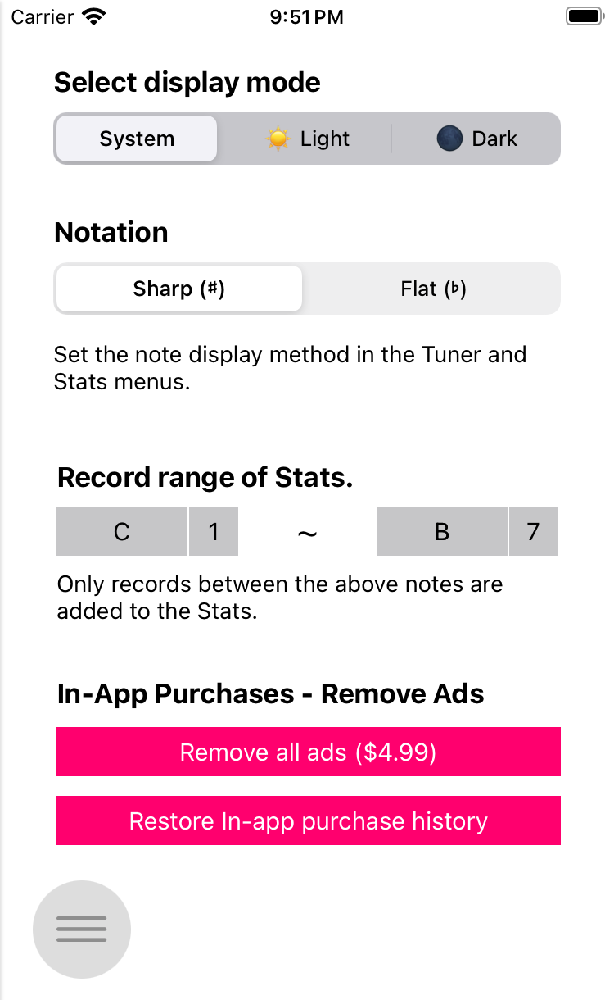

Tuner XR
Tuner XR은 보컬, 악기 등을 연주하는 음악가들을 위한 애플리케이션으로, 다음과 같은 기능을 제공합니다.
- 평균율과 순정율에 모두 대응할 수 있는 튜닝 기능
- 고정된 주파수가 아닌 다양한 주파수를 기준으로 튜닝할 수 있습니다.
- 음을 재생할 수 있는 주파수(음높이) 테이블
- 나의 튜닝 결과를 기록하고 열람할 수 있는 통계 기능
다른 편리한 기능도 있습니다.
- 아이패드, 아이폰 및 아이팟 터치(7세대) 전 기종에 대응하는 유니버설 디자인
- iCloud 연동을 통해 나의 Apple 기기간 튜닝 기록 결과를 동기화할 수 있음
- 다크 모드 지원
사용법
- 화면을 왼쪽 가장자리에서 스와이프하거나, 모든 화면에서 왼쪽 아래에 있는 동그라미 버튼을 클릭하면 메뉴를 열 수 있습니다.
튜너

- 먼저, 이 튜너는 마이크를 통해 음을 튜닝하기 때문에, 주변 환경이 조용한 곳에서 충분한 볼륨으로 악기 또는 보컬의 특정 음을 연주하세요. 주변에 소음이 강한 경우 측정 결과가 부정확할 수 있습니다.
- 상단의 패널에서 기준 튜닝 시스템, 주파수 등을 설정할 수 있습니다.
- 상단 버튼과 텍스트 필드에서 기준이 되는 음과 주파수를 설정할 수 있습니다. 위의 예시는 A4 = 440Hz로 설정한 것입니다. 다른 예로, 바로크 튜닝을 사용하고자 한다면 A4 = 415Hz로 설정하면 됩니다.
- 왼쪽 버튼은 튜닝 시스템을 설정합니다. 평균율 또는 순정율을 선택할 수 있습니다.
- 오른쪽 버튼은 튜닝 시스템을 순정율로 선택한 경우, 기준이 되는 장조 스케일을 설정할 수 있습니다. 예를 들어, C4 = 261.63Hz, 순정율 및 스케일 C를 설정한 경우 C 장조를 기준으로 튜닝 결과가 제공됩니다.
- 순정율 모드에서 단조를 설정하고자 하는 경우 단 3조 아래의 병행조(나란한조)를 선택합니다. C를 선택하면 A 단조로도 사용 가능합니다.
- 왼쪽의 화살표 버튼을 터치하면 패널을 감출 수 있습니다.
- 아래 표시기는 튜닝 결과의 정확도를 제공합니다. 음을 연주하면 해당하는 음을 자동으로 감지하고, 그 음의 표준 주파수에서 최대 +-50센트까지 튜닝 결과를 확인할 수 있습니다.
- 바늘이 왼쪽에 위치한 경우 원래 음높이보다 낮게 연주되고 있으며, 한 가운데인 경우 정확한 음높이로 연주되고 있고, 오른쪽에 위치한 경우 원래 음높이보다 높게 연주되고 있다는 뜻입니다.
- 튜닝시 특정 음을 4.5초 이상 고르게 연주한 경우 해당 튜닝의 결과가 통계 메뉴에 기록됩니다. 오른쪽 아래에 기록 상태창에서 기록의 진행, 실패, 성공 여부를 표시합니다.
주파수 테이블 (음높이 테이블)

- 주파수(Hz)와 튜닝 시스템, 스케일(순정율의 경우)를 입력하면 자동으로 C1 ~ B7 범위의 각 노트들의 주파수를 계산하여 표시하고 해당 음을 재생할 수 있습니다.
- 상단 버튼과 텍스트 필드에서 기준이 되는 음과 주파수를 설정할 수 있습니다. 위의 예시는 A4 = 440Hz로 설정한 것입니다. 다른 예로, 바로크 튜닝을 사용하고자 한다면 A4 = 415Hz로 설정하면 됩니다.
- 왼쪽 버튼은 튜닝 시스템을 설정합니다. 평균율 또는 순정율을 선택할 수 있습니다.
- 오른쪽 버튼은 튜닝 시스템을 순정율로 선택한 경우, 기준이 되는 장조 스케일을 설정할 수 있습니다. 예를 들어, C4 = 261.63, 순정율 및 스케일 C를 설정한 경우 C 장조를 기준으로 테이블의 결과가 제공됩니다.
- 순정율 모드에서 단조를 설정하고자 하는 경우 단 3조 아래의 병행조(나란한조)를 선택합니다. C를 선택하면 A 단조로도 사용 가능합니다.
- 아래쪽의 화살표 버튼을 터치하면 패널을 감출 수 있습니다.
- 각 셀을 클릭하면 해당 주파수의 음이 재생됩니다.
통계

- 튜너 메뉴에서 특정 음을 4.5초 이상 고르게 연주한 경우 해당 튜닝의 결과가 통계 메뉴에 기록됩니다.
- 표준 주파수(Hz)와 실제 연주된 음의 주파수, 두 차이 등이 센트(cent) 단위로 표시됩니다.
- 특정 기록을 삭제하고자 하는 경우 특정 셀을 왼쪽으로 스와이프하면 삭제 버튼이 표시됩니다. 삭제 버튼을 눌러 삭제할 수 있습니다.
- 다수의 기기가 iCloud 계정으로 연결된 경우 기록들을 각 기기간에 동기화하여 표시할 수 있습니다.
- 최근 50개의 기록이 그래프에 표시되며 연주된 주파수와 표준 주파수와의 차이를 볼 수 있습니다. 주파수를 기준으로 한 경우는 주파수 기준으로 표시되고 센트(cent)기준으로 한 경우 0센트를 기준으로 -50센트 ~ 50센트 범위 내에서 얼마나 표준 주파수와 차이가 나는지 볼 수 있습니다.
- 설정 메뉴에서 기록 대상의 범위를 지정할 수 있습니다. 해당 범위 밖에 있는 음은 기록되지 않습니다.
설정

- 디스플레이 모드 선택: 앱에서 표시될 디스플레이 모드를 선택합니다. '시스템'의 경우 OS의 기본 설정을 따르며, 라이트, 다크 모드는 OS의 설정 여부와 관계없이 라이트 또는 다크 모드로 표시합니다.
- 표기법: 튜너, 통계 메뉴에서 반음을 샤프(#)로 표시할지 또는 플랫(b)로 표시할지 결정합니다.
- 통계 기록 음역대: 이 부분을 설정하면 튜너 메뉴에서 해당 범위 내에 있는 음들만 통계에 기록합니다.
연락처
이 애플리케이션과 관련된 문의, 건의사항, 버그 리포트 등을 받고 있습니다. 의견을 주시면 해당 내용을 적극 반영하도록 하겠습니다.